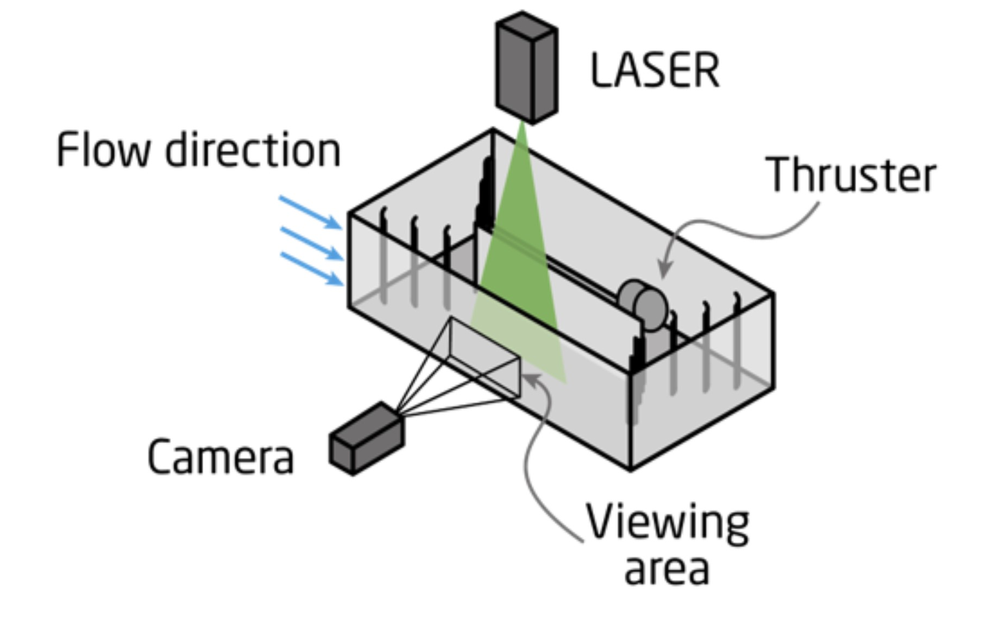
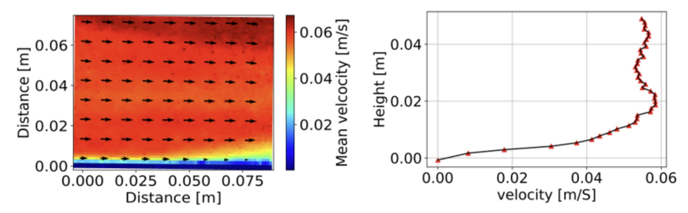
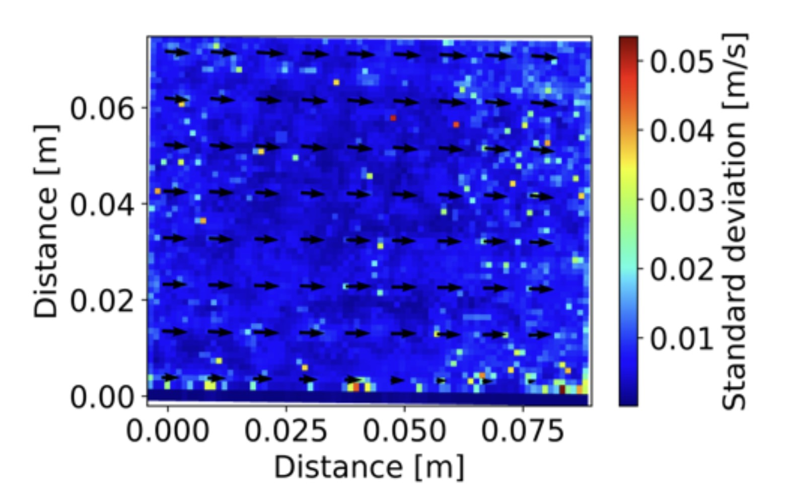
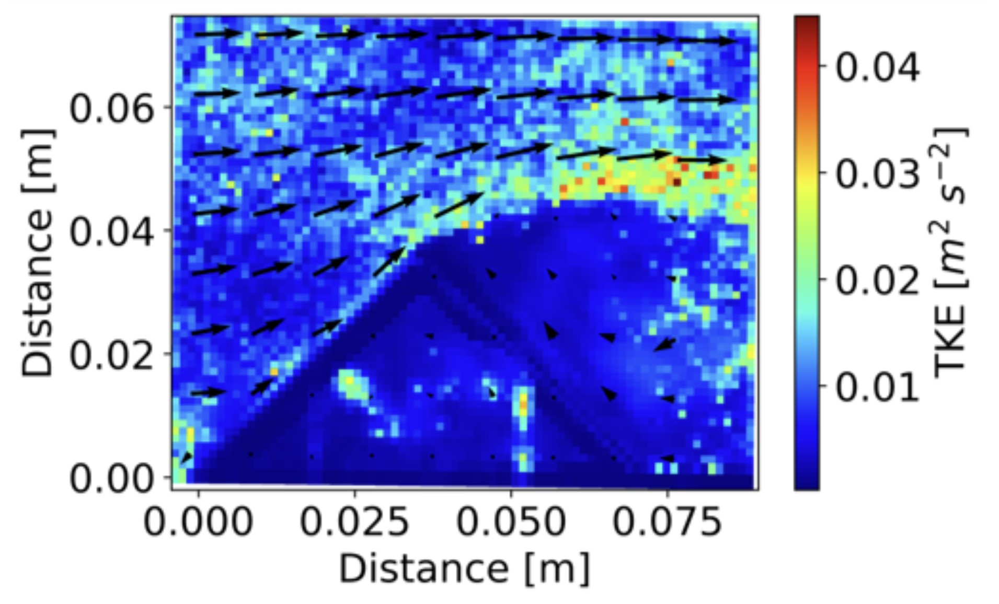
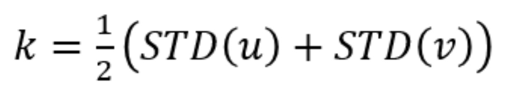

PIV
This assignment has two parts, an experiment divided into two.
By introducing small, naturally buoyant particles to a flow and shining a laser sheet at them it is possible to track the particles using a camera and therefore the flow velocity. Using this concept, we looked at a flow in an experimental setup. The flow was observed without any objects in and later various objects were put in to observe the flow around them. A tank with an underwater thruster, a divider panel in the middle and a series of guide fins in each corner was filled with water. A laser sheet was shone from above and a camera placed so that frames the laser sheet in the flow. The camera is connected to a computer where it is setup through the program pylon viewer. A calibration screen was placed in view of the camera in order to relate the pixels to distances in the flow. Spherical polyamide particles of estimated size of 20 micrometers were added to the flow by suspending them in ethanol and pouring it in. The camera was set to focus on the particles that interfered with the laser. A provided python code took the saved .tiff images from pylon viewer and calculated the velocity field. The velocity field is calculated by comparing two side-by-side images and calculating the distance travelled by them and dividing by the time between the frames. By calculating the standard deviation in each point, turbulent quantities can be estimated. Such as the turbulent intensity, turbulent kinetic energy and the variance from the mean flow velocity.
PIV setupMeasurements of the free flow were taken and the results show a developing boundary layer and a Free stream velocity of around 5.8 cm/s
Free flowDividing the standard deviation with the mean free stream velocity gives the turbulence intensity of about 5.7%. The expected value of the turbulence intensity was lower. Comparing other groups velocities, the higher velocity in our setup and higher Reynold’s number of 8700 resulted in increased turbulence.
Free flow turbulence intensityAn angle bracket was placed in view of the camera in the flow. The bracket had a 5mm hole in the middle of each flat surface, allowing the laser to shine through and illuminate a few particles inside the bracket. This resulted in columns of low measured velocities inside the bracket
Object in flow
In front of the bracket a stagnation point can be seen and an increase in velocity as the flow progresses along the bracket. At the top of the bracket the flow separates and a shear layer has formed between the low- and high velocity areas. In the Low velocity area, behind the bracket, the higher velocity flow induces a consistent clockwise rotating vortex.
Turbulent kinetic energy with object in flowThe TKE is calculated as shown below. It indicates the intensity of turbulence. The TKE is highest at the shear layer, coming from the point of separation.

PIV